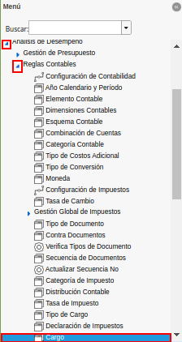

Cargo¶
Ubique en el menú de ADempiere, la carpeta “Análisis de Desempeño”, luego seleccione la carpeta “Reglas Contables”, por último seleccione la ventana “Cargo”.

Imagen 1. Menú de ADempiere
Podrá visualizar la ventana “Cargo” con todos los registros de los cargos utilizados en la empresa.
Imagen 2. Ventana Cargo

Seleccione la pestaña “Contabilidad” para definir la configuración contable del cargo seleccionado.
Imagen 3. Pestaña Contabilidad de la Ventana Cargo

Seleccione el icono ubicado del lado derecho del campo “Cargo Gasto”, para seleccionar la combinación contable del mismo.
Imagen 4. Campo Cargo Gasto de la Pestaña Contabilidad de la Ventana Cargo
Realice el procedimiento regular para configurar una combinación contable, el mismo se encuentra explicado en el documento Combinación Contable elaborado por ERPyA.
Imagen 5. Combinación Contable del Campo Cargo Gasto


Seleccione el icono ubicado del lado derecho del campo “Cargo Ingreso”, para seleccionar la combinación contable del mismo.
Imagen 6. Campo Cargo Ingreso de la Pestaña Contabilidad de la Ventana Cargo
Realice el procedimiento regular para configurar una combinación contable, el mismo se encuentra explicado en el documento Combinación Contable elaborado por ERPyA.
Imagen 7. Combinación Contable del Campo Cargo Ingreso


Seleccione el icono “Guardar Cambios”, para guardar el registro de los campos de la pestaña “Contabilidad”.
Imagen 8. Icono Guardar Cambios de la Combinación Contable del Cargo